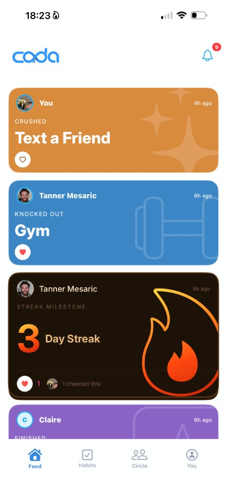
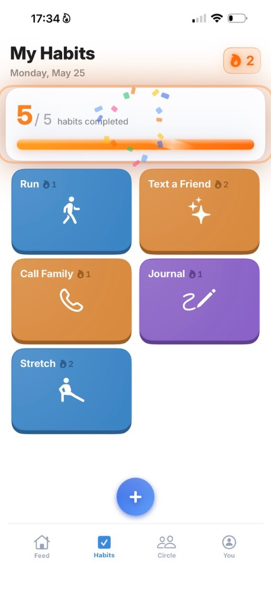

In 15 seconds a day, feel close to family and friends — on a daily basis.
Your daily feed, habit challenges, and rewards — a simple way to stay close to the people who matter most.
FEEL CLOSE AGAIN
You care deeply. Life just gets in the way.
You meant to call your sister. Text your college roommate. Check in on Dad. Somehow it's been a month.
Everyone's busy. The thread dies. You feel close in your heart — but not in your day-to-day.
Big catch-up plans feel heavy. You want to stay close without it becoming another thing on your to-do list.
Open CADA and see what your circle's up to — who texted a friend, who hit the gym, who kept a streak alive. In seconds, you're back in each other's lives.
That's all it takes. Check in, scroll your circle's feed, send a cheer. Small enough to never skip. Meaningful enough to feel close — every single day.
No spreadsheets. No guilt trips. Just colorful habit tiles you tap when you're done — text a friend, call family, stretch, whatever keeps you close.
Built for real life — not another app you'll abandon in a week.

Family, old friends, your inner circle. Just 3–5 who matter most.
One tiny habit — text someone, take a walk. Fifteen seconds. Done.
See their wins. Send a cheer. Stay in each other's lives.
"I hadn't talked to my college friends in months. Now we see each other in the feed every morning. It takes literally 15 seconds."
"My mom, sister, and I have a circle. 'Text a Friend' became our way of saying I love you without the pressure of a long call."
seconds a day
Start a circle. Check in tomorrow. Feel close again.
DOWNLOAD FOR iOSFree to start · No credit card